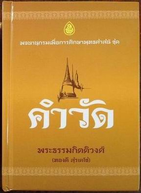
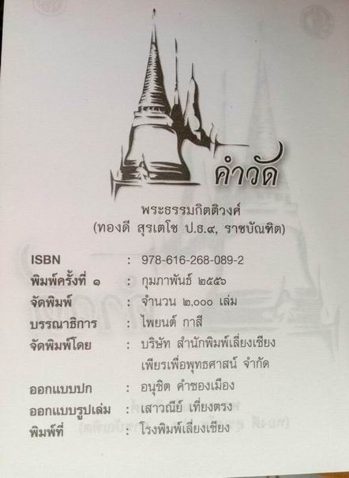
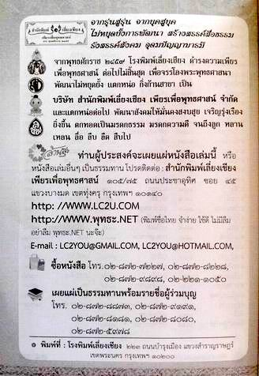
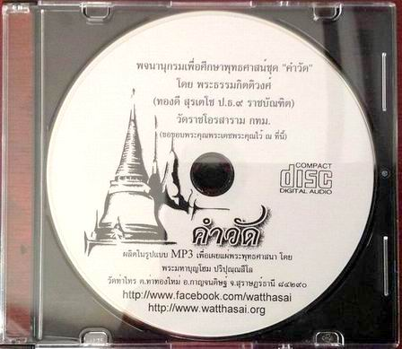

|
ด้วย ได้พิจารณาเห็นว่าหนังสือพจนานุกรมเพื่อการศึกษาพุทธศาสน์ชุด
"คำวัด" ซึ่งเขียนโดย พระเดชพระคุณ พระธรรมกิตติวงศ์
(ทองดี สุรเตโช ป.ธ.๙ ราชบัณฑิต) เป็นหนังสือที่มีประโยชน์มากแก่การศึกษาค้นคว้า
ประกอบกับ webmaster และคณะ ได้เขียนสคริปต์ และซาวด์เสียงประกอบ
แล้วบันทึกเสียง ตัดต่อ ฯลฯ เกี่ยวกับเรื่อง "คำวัด"
ตอนละประมาณ ๑ นาที เศษ โดยทำในรูปแบบ MP3 เพื่อประหยัดพื้นที่จักเก็บ
จนสำเร็จ แล้วนำออกอากาศทางสถานวิทยุชุมชนตำบลท่าทองใหม่ FM 107.25
MHz. ที่ดำเนินการอยู่ในขณะนั้น พอมีเวลา ก็ได้ก็นำไปใส่ไว้ในอินเตอร์เนต
ให้คนได้ดาวน์โหลดไปฟัง แถมยังได้เผื่อแผ่ให้สถานีวิทยุในเครือข่ายได้นำไปออกอากาศ
ขณะเดียวกันได้มอบให้เคเบิ้ลทีวีในเครือข่าย(ที่ขอมา) ได้นำไปใส่ภาพประกอบแล้วนำเสนอทางเคเบิ้ลทีวี
แต่ทั้งหมดนั้นแอดมินยังไม่ได้ออกแบบลาเบลหรือข้อความติดแผ่นซีดีเพื่อให้เป็นกิจลักษณะที่ชัดเจน
วันนี้ ๒๑ พฤษภาคม ๒๕๕๖ หลังจากกลับจากศาสนกิจนอกวัด
จึงมานั่ง ๆ ออกแบบเกือบ ๓๐ นาที จนได้สติกเกอร์ติดแผ่นซีดีสำเร็จเรียบร้อยดังที่เห็น
จึงนำมาลงให้ชม และนำตัวอย่างคลิปต์เสียงลงไว้ให้ได้ทดลองฟัง เพื่อให้ท่านที่มีความประสงค์จะทำเผยแพร่ได้เป็นตัวอย่างครับ...
สำหรับท่านที่มีความประสงค์จะได้มีหนังสือดังกล่าวไว้อ่านศึกษาเพิ่มเติม
ขอเชิญติดต่อซื้อได้ตามศูนย์หนังสือทั่วไป หรือสั่งซื้อตามข้อมูลที่ได้ลงไว้ด้านล่าง
จะสะดวก และหากพอมีกำลังทรัพย์ ข้าพเจ้าใคร่ขอแนะนำให้จัดซื้อถวาย
แด่พระภิกษุสามเณรที่วัดใกล้บ้านของท่าน เพื่อให้ท่านได้ศึกษาค้นคว้า
แล้วเทศนาสั่งสอนประชาชนต่อไป จะเป็นบุญกุศลอย่างยิ่งครับ
คลิปต์เสียงที่ทำไว้มีมาก ไม่สามารถนำลงทั้งหมดได้
เนื่องจากข้าพเจ้าเช่าพื้นที่โฮสทจำนวนจำกัด ซึ่งพื้นที่ในการเก็บข้อมูลราคาค่อนข้างสูง
ดังนั้น จึงได้นำตัวอย่างมาให้ท่านได้ทดลองฟัง ๕ คลิปต์เสียง ลองฟังดูนะครับ
ขอเจริญธรรม
พระมหาบุญโฮม ปริปุณฺณสีโล (ไชยฤทธิ์)
ผู้ช่วยเจ้าอาวาสวัดท่าไทร
Webmaster
webmaster
contact E-mail : watthasai@gmail.com
|

|
|

|
|
ปกหนังสือใหม่
ออกแบบดีมาก พกพาสะดวก ราคาตามปก ๒๘๐ บาท
|
|
ข้อมูลเกี่ยวกับหนังสือคำวัด
|
|

|
|

|
|
ท่านที่สนใจสามารถซื้อหามาเป็นเจ้าของตามนี้
|
|
ปกแผ่นซีดี
|

กลับไปหน้า
Web วัดท่าไทร
ไป Web สำนักงานเจ้าคณะภาค
๑๖
ไป
Web ศูนย์พัฒนาคุณธรรมภาคใต้
ไป
Web วิทยุชุมชนตำบลท่าทองใหม่
ไป Web ชมรมวีอาร์ร้อยเกาะสุราษฎร์ธานี
|